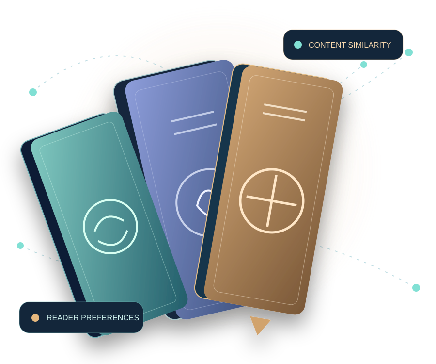
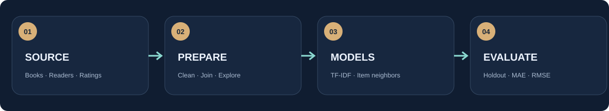
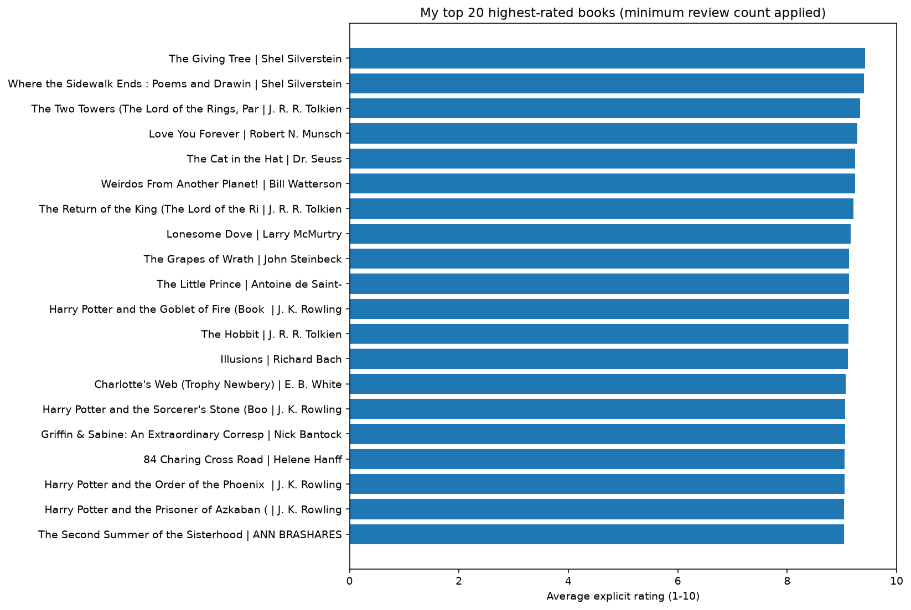
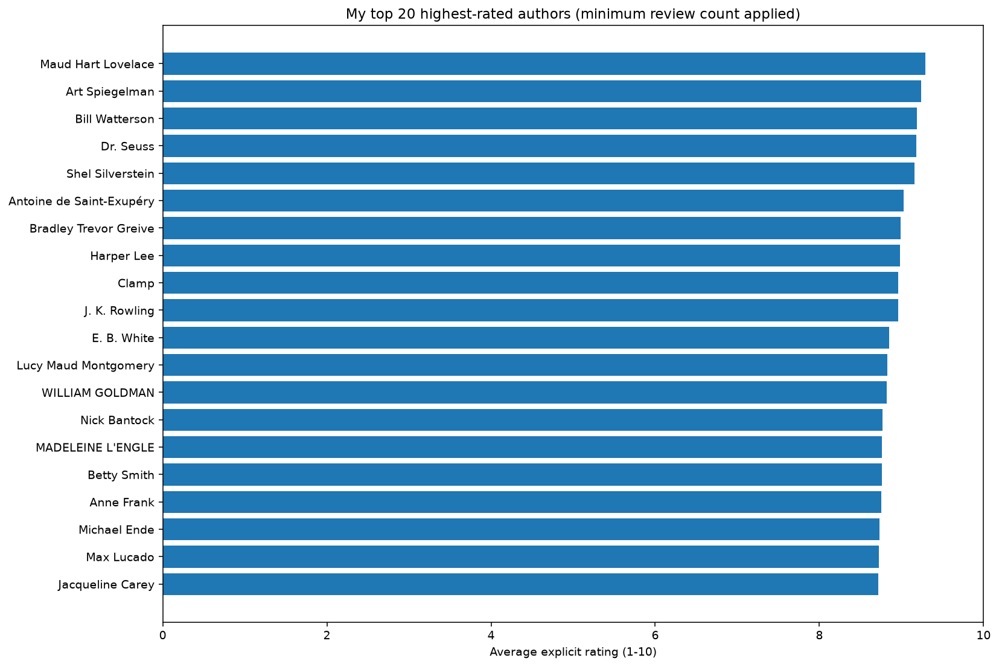
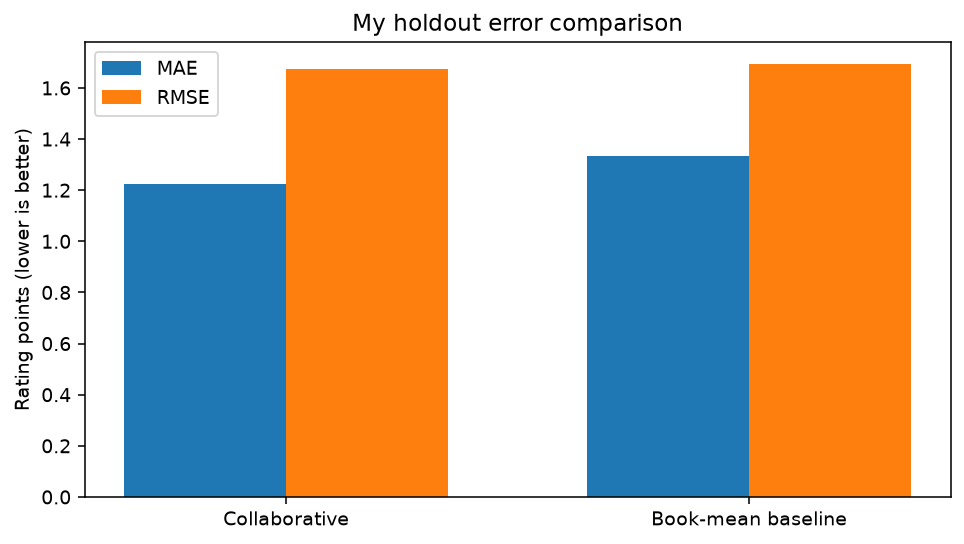

01 / Content-Based Filtering
I use book titles, authors, publishers and available publication years, convert the text into TF-IDF features, and compare books with cosine similarity.
Book information → TF-IDF → Similar books
I explore how machine learning can recommend books through two perspectives: the metadata available for each book and how readers rate it. A practical study of content-based and collaborative filtering.
Juan Luna Santibanez · Professor Beth Muturi · 2026

How can I suggest a book a reader may enjoy? I answer this using two distinct techniques and explain what each one measures.
I use book titles, authors, publishers and available publication years, convert the text into TF-IDF features, and compare books with cosine similarity.
I compare patterns of explicit ratings across readers. Item-item nearest neighbors suggest books based on what an example reader already rated.

The browser displays recommendations calculated in my Python notebook. The website does not retrain the model. Every displayed similarity score and rating estimate comes from the recorded notebook output.
Choose a book to inspect its TF-IDF neighbors.
Real results will appear after the original book dataset has been processed in Jupyter.
My notebook contains the full tables, preprocessing steps, model definitions and numerical evaluation. The visualizations below come from those computations.

Top 20 books with a stated minimum number of explicit ratings.

Top 20 authors by average explicit book rating.

Collaborative filtering tested against a simple book-average baseline. Lower error is better; the actual numbers are reported without assuming one model always wins.
The notebook is my source of truth. This website is a compact, responsive presentation of computed results rather than a replacement for the assignment.
Open the full analysis in Colab, run the cells, and inspect the data cleaning, EDA, both models and evaluation.
Open my notebook ↗The book datasets contain metadata, explicit and implicit ratings, and anonymized readers. I document my source and experiment limits.
Read my methodology ↗I explain what I built, how I measured it and where the limitations are.
I use ISBN as a text identifier for a book edition. I avoid converting it into an integer because leading zeros can be meaningful.
I treat zero as implicit interaction, not a zero-star dislike. I use explicit one-to-ten ratings for numeric prediction.
I repair broken accents, HTML entities and spacing so the displayed rankings better represent actual titles and authors.
I consolidate a small, verifiable set of spelling and punctuation variants, without pretending to solve author identity for every record.
I can find two ISBN records for the same written work. I aggregate titles and authors for my work-level ranking but retain ISBN keys for the collaborative model.
I rank title-and-author works using their average explicit scores after a minimum review-count requirement. I do not interpret this as global sales or literary quality.
I rank author names by the average explicit ratings linked to their recorded books, after applying a minimum review-count threshold.
I want a title with one ten-star score to receive less weight than one with many consistently high reviews. This threshold is a transparent heuristic.
I compare the text information available for books using TF-IDF and cosine similarity.
I convert book metadata into numeric text features and emphasize terms that are more distinctive across the available catalog.
I measure the alignment of two feature vectors. I do not treat cosine similarity as a one-to-ten user rating.
I only use fields that exist in my three input files. I do not invent genres, summaries or book descriptions.
Read my 40 questions and answers | Open my academic notebook